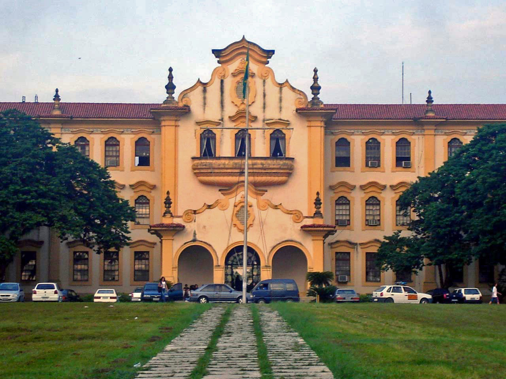

O que são Atividades Extensionistas?
As atividades de extensão são ações que aproximam a universidade da sociedade. Na Universidade Federal Rural do Rio de Janeiro, elas permitem que o conhecimento produzido nos cursos, pesquisas e laboratórios chegue diretamente às comunidades por meio de projetos, oficinas, eventos e programas educativos. Ao mesmo tempo, a universidade aprende com as realidades locais, fortalecendo sua função social. Para os estudantes, a extensão é uma oportunidade de aplicar o que aprendem na prática e desenvolver senso crítico, cidadania e responsabilidade social.
Cursos de Extensão


Participe dos nossos Projetos de Extensão!
Escolha o que mais combina com você e transforme conhecimento em ação.
Conheça todos os projetosSobre a Universidade

A Universidade Federal Rural do Rio de Janeiro é uma instituição centenária comprometida com o ensino, pesquisa e extensão. Com campus em Seropédica e outras localidades, atua em diversas áreas do conhecimento, sempre em diálogo com a sociedade.
A extensão universitária na UFRRJ é coordenada pela PROEXT - Pró-Reitoria de Extensão, que fomenta projetos que integram a universidade com comunidades locais e regionais.